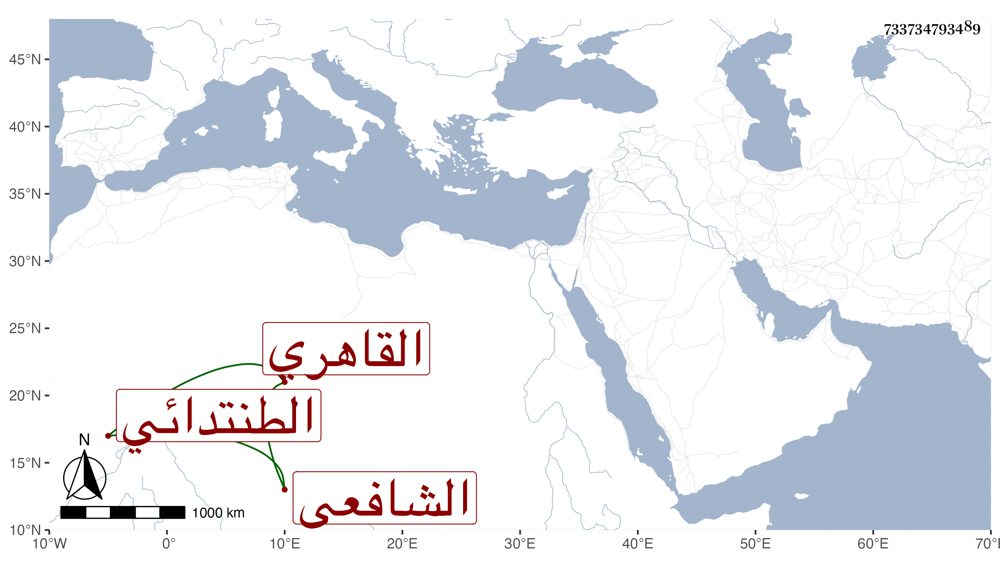

0902Sakhawi.DawLamic.ITO20230111-ara1.EIS1600.733734793489
Biography ID: 733734793489
158
عبد الرحمن بن أحمد بن عبد الرحمن بن عوض الزين بن الشهاب الطنتدائي الأصل القاهري الشافعي الماضي أبوه وأخوه إبراهيم . كان شيخا ظريفا نكتا ذا فهم وحسن عشرة من صوفية البيبرسية بل هو امام الرباط بها يتكسب من صناعة الحرير وحسنت توبته قبيل موته خصوصا بعد النجم بن النبيه وانجمع عن الناس واشتغل بفقره وقلة ذات يده حتى مات في ليلة الأربعاء عاشر المحرم سنة سبع وسبعين عن قريب الثمانين ودفن من الغد بحوش البيبرسية رحمه الله وعفا عنه .
